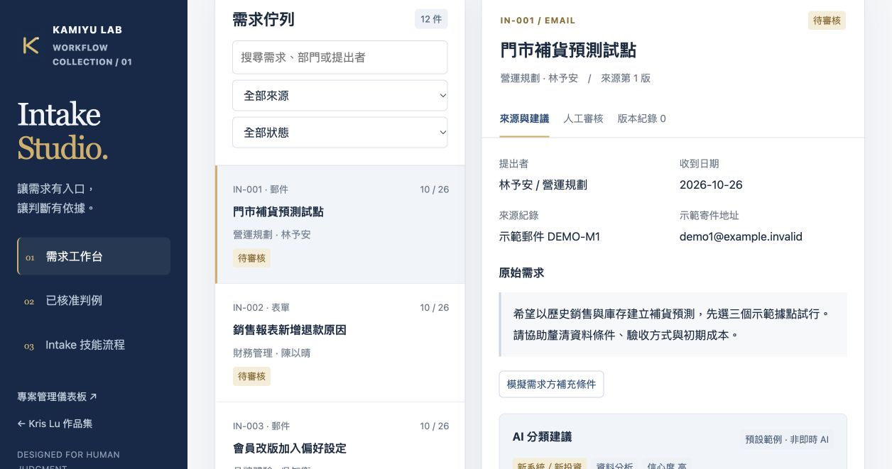

01 / THE PROBLEM
收到需求，還不等於能開始做。
需求混在不同來源，常缺少範圍、負責小組或既有案件關聯。直接讓 AI 派工，會把未確認的假設變成正式工作。
PMO Intake Skill 與需求審核工作台
從需求信件到分類建議，真正困難的是保留證據、辨識缺漏，以及知道哪一步必須交回人員。這個作品將流程寫成 Agent Skill，再以工作台承接審核與版本紀錄。
Kris Lu / Kamiyu Lab · 獨立重製公開展示 · 全部虛構資料

01 / THE PROBLEM
需求混在不同來源，常缺少範圍、負責小組或既有案件關聯。直接讓 AI 派工，會把未確認的假設變成正式工作。
02 / MY CONTRIBUTION
我設計需求分類、證據整理與人工覆核方式，將操作規則整理成 Skill，並以 AI 協作實作審核工作台，保存審核版本與當時的來源快照。
03 / THE DESIGN CHOICE
人員先採用或修改建議，再確認審核結果。來源更新時，舊建議停用；只有目前定稿、核准且來源未變的示範案例可以作為參照。
AGENT SKILL
公開版提供通用的 SKILL.md 與分類規則，展示來源核對、事實與推論分離、可能重複辨識及人工決策界線。它定義 Agent 的工作方式；網站的預設建議則用來示範工作台互動。
實際企業環境的 AI 輔助仍在測試與分階段設計中；本展示不代表模型整合已正式啟用。
PUBLIC DEMO
12 件全新虛構需求；AI 建議預先編寫，沒有呼叫模型。審核、核准及來源變動只儲存在瀏覽器，不構成正式立案、派工或身分驗證。